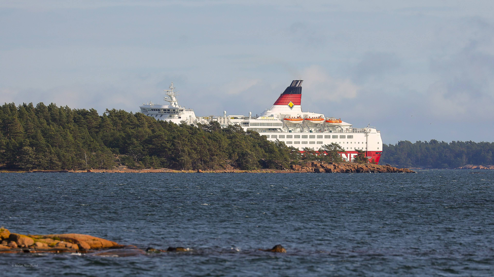

Jagend, drinkend en zwijnenbig in de bek: unieke beelden van wolvin op de Veluwe
'Intense stilte' bij herdenking op Airborne-begraafplaats Oosterbeek
Traditioneel worden de militairen met groot eerbetoon herdacht in het bijzijn van veteranen, hun familie en duizenden andere bezoekers. Dit jaar waren er maar 23 genodigden op het ereveld.

Finse veerboot vastgelopen bij Åland, opvarenden worden geëvacueerd
Het schip maakte water en de kapitein liet het vaartuig gecontroleerd vastlopen bij een eiland in de Finse regio Åland.
Rechter VS blokkeert verbod op Chinese WeChat in appstores
Volgens de rechtbank komt de vrijheid van meningsuiting door een verbod in gevaar, omdat veel gebruikers dan niet meer kunnen communiceren met mensen in China.
Lees alles over
Tour de France

Ajax schuift zonder enige problemen RKC opzij
De Amsterdammers zijn door goals van Dusan Tadic, Zakaria Labyad en Lisandro Martínez met 3-0 te sterk voor de Waalwijkers.
Alleen Heerenveen, Ajax, PSV en Vitesse nog zonder puntverlies na speelronde 2
Vandaag stonden er vier duels op het programma in de eredivisie. ADO-Groningen (12.15), Feyenoord-Twente (14.30), Willem II-Heracles (14.30) en Ajax-RKC (16.45).
Meer dan de helft van kinderen 9-13 jaar gepest, vaak buiten zicht van docent
Het NOS Jeugdjournaal deed onderzoek onder meer dan 1000 kinderen van 9 tot 13 jaar. De meeste willen dat er op school meer aandacht aan wordt besteed.
Berghuis, Malen en Klaassen keren terug in voorselectie Nederlands elftal
Nederland oefent op 7 oktober tegen Mexico. Op 11 en 14 oktober speelt Oranje in het kader van de Nations League uitduels met Bosnië-Herzegovina en Italië.
Weer arrestaties in zesde week van demonstraties Wit-Rusland
Volgens Russische media zijn zeker tien mensen opgepakt bij een protest in Minsk tegen president Loekasjenko.
Zoetemelk in ziekenhuis na aanrijding op fiets, maar is bij bewustzijn
De 73-jarige oud-Tourwinnaar is met meerdere botbreuken opgenomen in een ziekenhuis in de Franse hoofdstad.